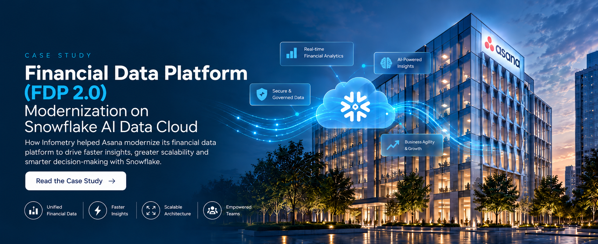

Tightly coupled processing
Extensive custom Python processing and tightly coupled SQL transformations increased implementation and maintenance effort.

Case Study
How Infometry helped Asana modernize its financial data platform to drive faster insights, greater scalability and smarter decision-making with Snowflake.
Read the Case Study →Our Client
Asana is a leading global SaaS company that relies on financial and operational data to measure critical business metrics, including Monthly Recurring Revenue (MRR), Annual Recurring Revenue (ARR), Customer Lifetime Value (LTV), Customer Churn, and New Logo Acquisition. These insights are essential for executive decision-making, financial planning, and business performance management.
Asana’s Financial Data Platform (FDP 2.0) integrates data from multiple enterprise applications, including Zuora, Salesforce, NetSuite, and Product Events, to provide a unified foundation for enterprise reporting and analytics.
As Asana’s Financial Data Platform evolved to meet growing business demands, the company sought to modernize its data architecture to improve scalability, maintainability, and governance while adopting Snowflake best practices and fully leveraging the Snowflake AI Data Cloud’s native capabilities for enterprise data engineering, analytics, and secure data sharing.
Infometry was engaged to assess, redesign, and modernize Asana’s existing Financial Data Platform by implementing a modular Snowflake architecture that simplifies data integration, accelerates financial reporting, strengthens governance, and establishes a scalable foundation for enterprise analytics and future business growth.
Asana’s existing Financial Data Platform had successfully supported the organization’s reporting requirements for several years. As the platform expanded to accommodate new business capabilities and increasing data volumes, its architecture presented opportunities for modernization to improve operational efficiency, scalability, and long-term maintainability.
Extensive custom Python processing and tightly coupled SQL transformations increased implementation and maintenance effort.
Full data refreshes during synchronization resulted in longer processing times and unnecessary compute consumption.
Limited auditability and governance made data lineage, reconciliation, and operational monitoring more challenging.
The absence of a modular architecture and dimensional data model increased the complexity of introducing new business capabilities.
Operational processing and analytical reporting shared common datasets, limiting workload optimization.
Growing business demands required a more flexible architecture capable of supporting future expansion and Snowflake best practices.
Infometry successfully modernized Asana’s Financial Data Platform by redesigning the architecture using Snowflake best practices and modern data engineering principles.
By partnering with Infometry, Asana successfully transformed its Financial Data Platform into a modern, enterprise-grade Snowflake data platform that is scalable, governed, and significantly easier to operate, maintain, and extend.
Improvement in data pipeline performance By replacing full data refreshes with incremental data processing for faster delivery.
Reduced Snowflake compute consumption Through optimized data movement and incremental loading strategies for improved efficiency.
Improved maintainability and operational support Through modular architecture and Apache Airflow-based workflow orchestration for reliability.
Enhanced governance, auditability, and data quality Through standardized enterprise models and comprehensive audit frameworks for consistency.
Accelerated delivery of new business requirements Through reusable dimensional models and modular transformation pipelines for agility.
Established a trusted enterprise reporting foundation With standardized facts and conformed dimensions supporting consistent financial metrics.
Enabled a scalable platform for self-service analytics and AI initiatives By leveraging Snowflake capabilities and best practices.
A unified data ecosystem built on Snowflake.
Let’s build a scalable, governed and future-ready analytics foundation together.